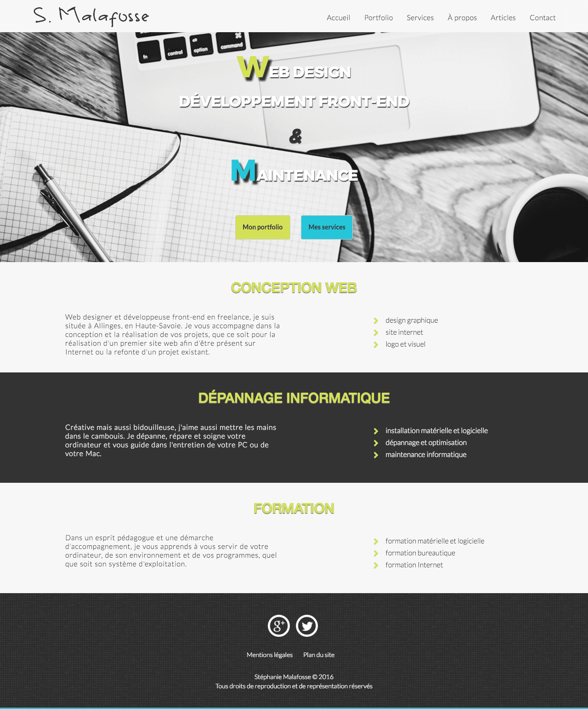
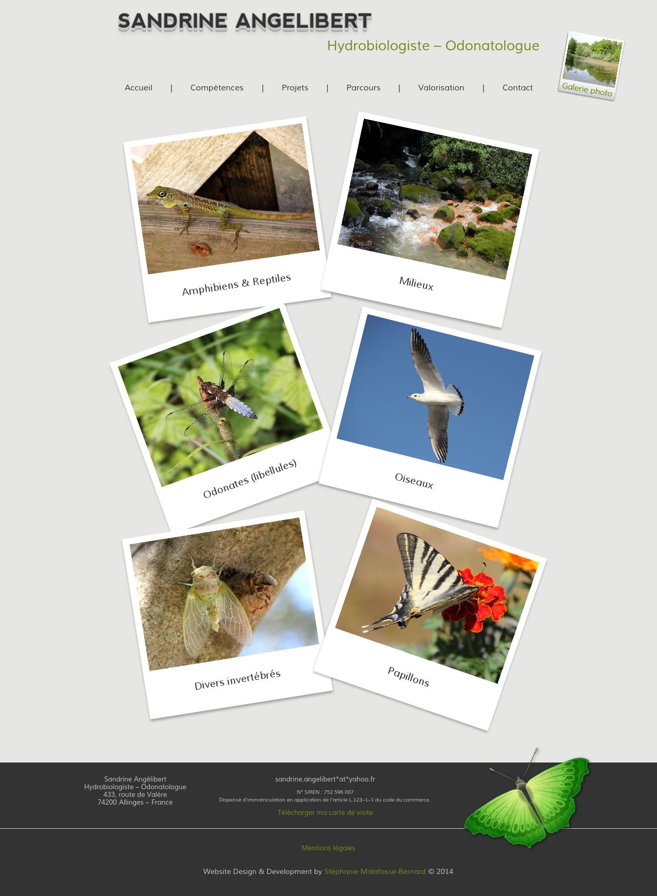
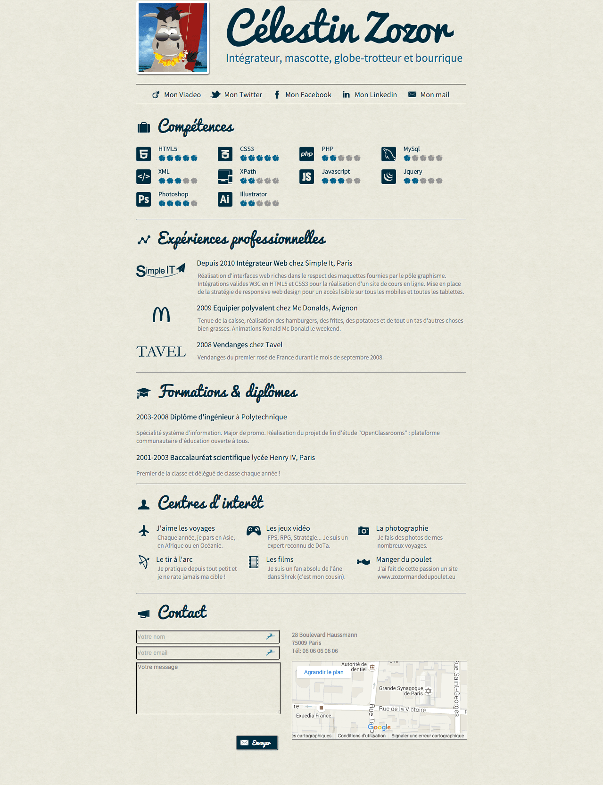
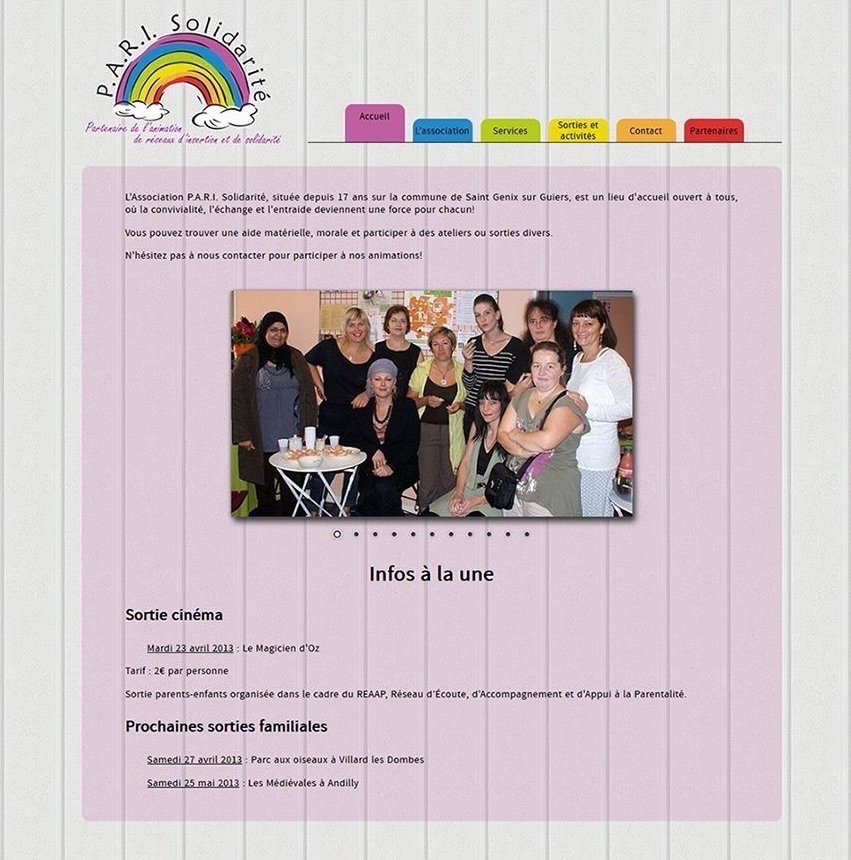

Refonte de mon site personnel afin de présenter mon portfolio et mon activité de web designer et de développeuse front-end en freelance.
- Travail réalisé : charte graphique, web design et intégration du site internet
- Techniques : HTML5, CSS3, Javascript, jQuery, framework Bootstrap, site responsive et mobile friendly, mobile first
- Lien : www.smalafosse.com

Hydrobiologiste, odonatologue et docteur en écologie aquatique, Sandrine Angélibert s'est spécialisée depuis plus de 10 ans dans la biodiversité des macroinvertébrés et des libellules adultes. Elle propose ses services pour toute étude nécessitant une expertise écologique.
- Travail réalisé : charte graphique, web design et intégration
du site internet
- Techniques : HTML5, CSS3, Javascript, jQuery, site responsive
- Lien : www.sandrineangelibert.fr

Intégration du site portfolio fictif de Célestin Zozor réalisé dans le cadre du MOOC HTML5-CSS3 du site OpenClassrooms.
Association P.A.R.I. Solidarité

Conviviale et accueillante, l'association P.A.R.I. Solidarité est un lieu où l'échange et l'entraide sont une force pour chacun. Elle est un lieu privilégié pour l'aide sociale et administrative ainsi qu'un partenaire de l'animation proposant divers ateliers et activités, une distribution alimentaire et une boutique de vêtements d'occasion.
- Travail réalisé : web design et intégration du site internet, site géré par le client
- Techniques : HTML, CSS, PHP, CMS WordPress
- Lien : www.parisolidarite.fr

Création du logo SMB Web de mon premier site portfolio.
- Travail réalisé : design graphique
- Techniques : Illustrator, Photoshop
- Lien : smbweb.jpg
Poster sur la mondialisation

Création d'un poster sur le thème de la mondialisation.
- Travail réalisé : design graphique
- Techniques : Illustrator, Photoshop
- Lien : mondialisation.png

Création d'un journal local.
- Travail réalisé : design graphique, mise en page et rédaction du contenu
- Techniques : Pages, Photoshop
- Lien : journal.png
{kind=link}